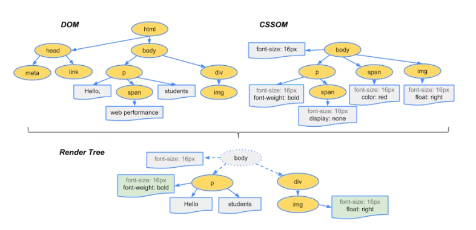
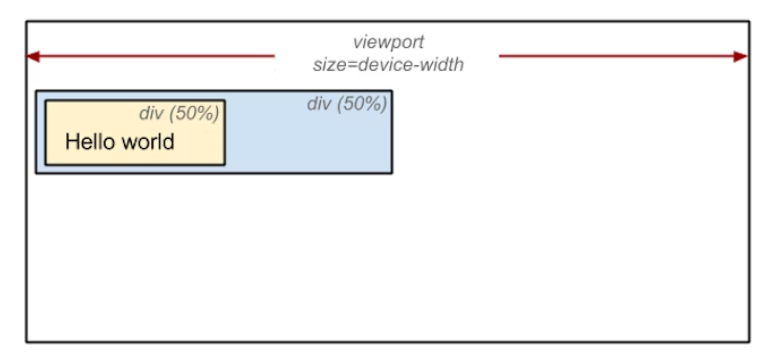

浏览器渲染过程

先了解一下浏览器渲染过程：
- 解析HTML，生成DOM树，解析CSS，生成CSSOM树
- 将DOM树和CSSOM树结合，生成渲染树(Render Tree)
- 回流：根据生成的渲染树，进行回流，获取节点的几何信息（位置，大小）
- 重绘：根据渲染树以及回流得到的几何信息，得到节点的像素
- 将像素发给GPU，展示在页面上
生成渲染树
为了生成渲染树，浏览器主要工作：
- 从DOM树根节点开始遍历每个可见节点
- 对于每个可见节点，找到CSSOM树中对应的规则，并应用它们
- 根据每个可见节点及其对应样式，组合生成渲染树
既然要遍历可见节点，要知道什么节点不可见。不可见节点包括：
- 一些不会渲染输出的节点，比如script, meta, link等
- 一些通过css隐藏的节点，比如display: none。注意，用visibility和opacity隐藏的节点，还是会显示在渲染树上。
回流
生成渲染树后，还需要计算其中每个节点在设备视口（viewport）内确切的位置和大小，这个计算的阶段就是回流。
为了获取每个对象在页面上的大小和位置，浏览器从渲染树的根节点开始遍历，可以以下面这个例子来表示：
1 |
|
可以看到，第一个div将节点的显示尺寸设置为视口宽度的50%，第二个div将其尺寸设置为父节点的50%。而在回流这个阶段，我们就需要根据视口具体的宽度，将其转为实际的像素值。（如下图）

重绘
通过构建渲染树和回流阶段，我们已经知道了各可见节点的几何信息（位置、大小），那么就可以将渲染树的每个节点都转换为页面上的实际像素，这个阶段就叫做重绘。
减少回流和重绘
了解完回流和重绘所做的事情，我们来谈谈如何减少回流和重绘。
何时发生回流重绘
先要知道何时发生回流和重绘。
前面已经知道，回流阶段主要是计算节点的位置和几何信息，那么当页面布局和几何信息发生变化时，就需要回流。比如以下情况：
- 页面一开始渲染（无法避免）
- 添加或删除可见DOM元素
- 元素的位置发生变化
- 元素的尺寸发生变化（margin, padding, border, width, height）
- 内容发生变化，比如文本变化或图片被另一个尺寸不同的图片替换
- 浏览器窗口尺寸变化（因为回流是根据视口大小来计算元素的位置和大小的）
注意：回流一定会触发重绘，而重绘不一定会回流 比如只改变背景色等样式，只会重绘。
根据改变的范围和程度，渲染树中或大或小的部分需要重新计算。
有些改变会触发整个页面重排，比如：滚动条出现，修改根节点
浏览器的优化机制
现代浏览器有其优化机制，由于每次重排都会造成额外计算消耗，因此大多数浏览器会通过队列化修改并批量执行来优化重排过程。
浏览器会将修改操作放入到队列里，直到过了一段时间或操作达到一个阈值，才清空队列。
但是！当有获取布局信息的操作的时候，会强制队列刷新，比如当你访问以下属性或使用以下方法：
- offsetTop、offsetLeft、offsetWidth、offsetHeight
- scrollTop、scrollLeft、scrollWidth、scrollHeight
- clientTop、clientLeft、clientWidth、clientHeight
- getComputedStyle()
- getBoundingClientRect
- 具体参考 What forces layout / reflow
以上属性和方法都需要返回最新的布局信息，因此浏览器不得不清空队列，触发回流重绘来返回正确值。
因此修改样式时，最好避免使用它们，如果必须使用，可以将值缓存起来。
怎样减少回流重绘
使用强制刷新队列的属性和方法时，使用变量缓存值
1
2
3
4
5
6// 这样写每次循环都会强制浏览器刷新队列
function initP() {
for (let i = 0; i < paragraphs.length; i++) {
paragraphs[i].style.width = box.offsetWidth + 'px';
}
}1
2
3
4
5
6
7// 使用变量，只获取一次
const width = box.offsetWidth;
function initP() {
for (let i = 0; i < paragraphs.length; i++) {
paragraphs[i].style.width = width + 'px';
}
}最小化重绘和重排
1
2
3
4
5// 例子中，三个样式属性被修改，每一次都影响元素几何结构，引起回流（现代浏览器已优化，只会触发一次）
const el = document.getElementById('test')
el.style.padding = '5px'
el.style.borderLeft = '1px'
el.style.borderRight = '2px'1
2
3// 优化1：使用cssText
const el = document.getElementById('test')
el.style.cssText += 'border-left: 1px; border-right: 2px; padding: 5px;'1
2
3// 优化2：修改css的class
const el = document.getElementById('test')
el.className += ' active'批量修改DOM。当我们需要对DOM进行一系列修改的时候，可以通过以下步骤减少回流重绘次数：
- 使元素脱离文档流
- 对其进行多次修改
- 将元素带回文档流中
对于复杂的动画效果，使用绝对定位让其脱离文档流
对于复杂的动画效果，由于频繁引起回流重绘，可以使用绝对定位，让它脱离文档流css3硬件加速（GPU加速）
- transform、opacity、filters这些动画不会引起回流重绘
- 对于动画的其他属性，如background-color，还是会引起回流重绘，但是可以提升这些动画的性能
- 注意：使用太多css3硬件加速，会导致内存占用较大